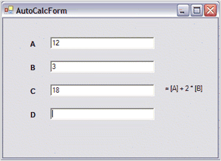

By default, CalcQuickBase does not try to track any dependencies among the variables you set. Thus, if you have a formula like
"=[TestValue]+2", the computed value of this formula will not change automatically if you modify your TestValue variable. To enable automatic recalculation of dependent variables, you must set the CalcQuickBase.AutoCalc property to True. Once this is done, the CalcQuickBase object (through its embedded CalcEngine object) maintains the required dependency information.
In practice, some additional work needs to be done. When a variable is auto-changed, nothing will actually happen until you try to use it. For example, assume that you have a series of text boxes on a form with some of the text boxes holding numerical values and some text boxes holding formulas that reference these values through variables that you have registered with a CalcQuickBase object.

Figure 31: AutoCalc
In the above screenshot, Text Box C is set to a formula that references the values from Text Box A and Text Box B. So, once the value in Text Box A or Text Box B changes, the value in Text Box C should also change.
In order to get this to work, two things must be done. First, when the variable registered as A or B is modified, your code must set the new values in the CalcQuickBase object by using indexers. The reason for you do this is, so that CalcQuickBase has no knowledge of Text Box A and Text Box B. It knows about the variables A and B which you have registered through indexing, but it has no knowledge that these values are actually coming from particular text boxes. After you have set the new values using indexers, the CalcQuickBase object knows that variable C will change and modify its value. But, the CalcQuickBase object that modifies its value for variable C has no effect on the text box that holds C. This is the point where your code needs to play its second role. You need to get the value of variable C and put it into the appropriate text box. The common question is, "How does the code know that it has to retrieve C so that it can update Text Box C appropriately?" This is made possible as the CalcQuickBase object raises an event, CalcQuickBase.ValueSet, everytime a value that it is tracking is modified. So, your code can listen for this event and set the proper values.
The following code illustrates the above process.
|
[C#]
private CalcQuickBase calculator = null;
private void Form_Load(object sender, System.EventArgs e) {
// 1) Instantiate a CalcQuickBase object. calculator = new CalcQuickBase();
// 2) Populate your controls. this.textBoxA.Text = "12"; this.textBoxB.Text = "3"; this.textBoxC.Text = "= [A] + 2 * [B]";
// Must enter formula names before turning on calculations. // 3) Assign formula object names. calculator["A"] = this.textBoxA.Text; calculator["B"] = this.textBoxB.Text; calculator["C"] = this.textBoxC.Text; calculator["D"] = this.textBoxD.Text;
// 4) Turn on auto calculations. this.calculator.AutoCalc = true;
// 5) Subscribe to the event to set newly calculated values. this.calculator.ValueSet += new QuickValueSetEventHandler(calculator_ValueSet);
// 6) Subscribe to some events to trigger the setting of values into CalcQuickBase. this.textBoxA.Leave +=new EventHandler(textBoxA_Leave); this.textBoxB.Leave +=new EventHandler(textBoxB_Leave); this.textBoxC.Leave +=new EventHandler(textBoxC_Leave); this.textBoxD.Leave +=new EventHandler(textBoxD_Leave);
// 7) Allow the CalcQuickBase sheet to create dependency lists. // Necessary for auto-calculations. this.calculator.RefreshAllCalculations(); }
// 8) Raised when a variable value is calculated. private void calculator_ValueSet(object sender, OuickValueSetEventArgs e) { switch(e.Key) { case "A": this.textBoxA.Text = this.calculator[e.Key].ToString(); break; case "B": this.textBoxB.Text = this.calculator[e.Key].ToString(); break; case "C": this.textBoxC.Text = this.calculator[e.Key].ToString(); break; case "D": this.textBoxD.Text = this.calculator[e.Key].ToString(); break; default: break; } }
// 9) Handles the changing of the text in the text box so the CalQuick object can be updated as the text changes. private void textBoxA_Leave(object sender, EventArgs e) { if(this.textBoxA.Modified) { calculator["A"] = this.textBoxA.Text; this.textBoxA.Modified = false; } } // ..... same for textBoxB_Leave, textBoxC_Leave, textBoxD_Leave |
|
[VB]
Private calculator As CalcQuickBase = Nothing
Private Sub Form_Load(sender As Object, e As System.EventArgs) ' 1) Instantiate a CalcQuickBase object. calculator = New CalcQuickBase()
' 2) Populate your controls. Me.textBoxA.Text = "12" Me.textBoxB.Text = "3" Me.textBoxC.Text = "= [A] + 2 * [B]"
' Must enter formula names before turning on calculations. ' 3) Assign formula object names. calculator("A") = Me.textBoxA.Text calculator("B") = Me.textBoxB.Text calculator("C") = Me.textBoxC.Text calculator("D") = Me.textBoxD.Text
' 4) Turn on auto calculations. Me.calculator.AutoCalc = True
' 5) Subscribe to the event to set newly calculated values. AddHandler Me.calculator.ValueSet, AddressOf calculator_ValueSet
' 6) Subscribe to some events to trigger the setting of values into CalcQuickBase. AddHandler Me.textBoxA.Leave, AddressOf textBoxA_Leave AddHandler Me.textBoxB.Leave, AddressOf textBoxB_Leave AddHandler Me.textBoxC.Leave, AddressOf textBoxC_Leave AddHandler Me.textBoxD.Leave, AddressOf textBoxD_Leave
' 7) Allow the CalcQuickBase sheet to create dependency lists necessary for auto calculations. Me.calculator.RefreshAllCalculations()
' Form_Load End Sub
' 8) Raised when a variable value is calculated. Private Sub calculator_ValueSet(ByVal sender As Object, ByVal e As OuickValueSetEventArgs) Select Case e.Key Case "A" Me.textBoxA.Text = Me.calculator(e.Key).ToString() Case "B" Me.textBoxB.Text = Me.calculator(e.Key).ToString() Case "C" Me.textBoxC.Text = Me.calculator(e.Key).ToString() Case "D" Me.textBoxD.Text = Me.calculator(e.Key).ToString() Case Else End Select
' Calculator_ValueSet End Sub
' 9) Handles the changing of the text in the text box so the CalcQuickBase object can be updated as the text changes. Private Sub textBoxA_Leave(ByVal sender As Object, ByVal e As EventArgs) If Me.textBoxA.Modified Then calculator("A") = Me.textBoxA.Text Me.textBoxA.Modified = False End If
' TextBoxA_Leave End Sub |
The following is an explanation of the numbered steps given in the preceding Form_Load.
1. Instantiates the CalcQuickBase instance.
2. Sets some initial text into the first three text boxes. The first two values are just numerical entries but, the third value will be treated as a formula by the CalcQuickBase object as it begins with a "=".
3. This step registers the variable names A, B, C and D with the CalcQuickBase object, and sets the initial values of these variables to the contents of the text boxes.
4. Here the AutoCalc property is turned on so CalcQuickBase will start tracking any dependencies that it notes among the variables registered with it. Note that this step was done after the initial registering of the variables in step 3. So, any relations among the registered variables are unknown to the CalcQuickBase object. This shortcoming will be addressed in step 7 and the rationale for this order will be discussed there.
5. Subscribe to CalcQuickBase's ValueSet event so that the code can react to any automatic changing of the registered variables’ values and place them into the appropriate text box so your display will immediately reflect any change.
6. Subscribe to the text box events so that you can update the CalcQuickBase object when the text in a text box has changed.
7. This step forces the recalculation of all variables registered with the CalcQuickBase object. This has to be done after the AutoCalc property has been set to True, so that the dependencies between variables can be monitored. The reason to postpone setting AutoCalc until after the initial registration of the variables, is to avoid problems that might occur because of CalcQuickBase trying to set up dependency chains even before all the variables have been registered. Initializing the variables, turning on AutoCalc, and then calling RefreshAllCalculations, avoids this potential problem.
8. This is the event handler that moves a freshly computed variable into the text box that it is related to.
9. These four event handlers signal when the user leaves a modified text box. At that point, the CalcQuickBase object is updated to reflect the new value that has been entered by the user.